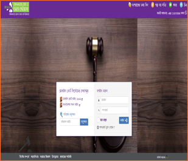
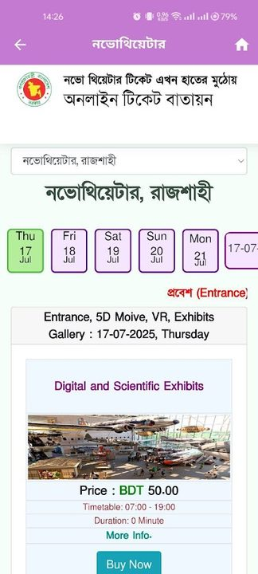
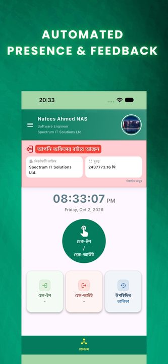

Systems People Use Every Day
A short summary of each project. Open any of them for the full case study.

TCB Smart Card Platform
TCB sells low-price goods to more than 10 million families in all 64 districts. Paper coupons were easy to copy, some families were listed twice, and there was no live view of what was handed out.
Family registration checked against the NID, a smart card with a secure QR code for every family, and the TCB Card Sheba Android app that more than 10,000 dealers use to check the card before each sale, online or offline.
- More than 10 million families registered once, with no duplicates.
- Over 57 million people benefit from distribution that is open and hard to cheat.
- Duplicate claims cut by 99.8%, because every sale is checked.
- TCB Card Sheba app downloaded more than 100,000 times.

Industrial e-Court Bangladesh
The labour courts ran on paper files. Hearings were scheduled by hand, summons were delivered in person, and workers could not check hearing dates without going to court.
One online system for the whole case: online filing, the daily cause list published automatically, digital files for judges, a log that shows every change, and SMS alerts for hearing dates.
- Scheduling delays cut by 85%, with the cause list published online straight away.
- Paperless case tracking for workers, employers and lawyers across all labour court benches.
- Hearing notices and orders sent digitally, with a record of every step.

Automated Smart Card Issuance Platform
Driving licences and transport cards had to be produced in large numbers, quickly, and be very hard to copy.
A central system that runs laser engraving and chip encoding in one flow, keeps chip keys locked in secure hardware, stores the fingerprint on the card, and lets officers check cards with a handheld scanner.
- More than 15,000 cards personalised every day.
- No counterfeit incidents reported on the issued chip cards.
- Officers check cards instantly with handheld scanners, even offline.

National e-Licensing Platform
Licences and permits needed paper forms, office visits and weeks of waiting, and applicants could not see where their application was.
One online portal: apply and upload documents, applications routed to the right officer automatically, approval by e-signature, online payment, and a signed licence with a QR code.
- Time to get a licence cut from 21 days to under 48 hours.
- More than 100,000 licences issued, each checkable by QR code.
- Fees paid online through Bangladesh Bank's e-challan.
Officers’ Club Dhaka
A club of about 6,600 members needed one place to share news and to let members check, book and pay for its halls, guest house and services without calling the office.
The club website, member portal and Android and iOS apps: member login, booking calendars for halls and guest house rooms, salon booking, online payment, a booking status check and a notice board.
- Members see free dates at any time.
- Halls, guest rooms and salon services booked and paid for online.
- The club in members’ pockets, on Android and iOS.

Novotheatre eTicket
Without online ticketing, visitors have to queue at the counter, without knowing in advance what is showing and when.
An online ticket portal and the Novotheatre eTicket Android app: pick a date, choose a show such as a 5D movie, VR or the exhibits, buy a ticket and enter with a barcode.
- Tickets bought before arrival, on the web or in the app.
- Each show’s time, duration and price clear before buying.
- App downloaded more than 500 times.

Gazipur City Corporation e-Revenue
Citizens and businesses had to visit the office to find out what they owed, renew a trade licence or check an application.
An online service portal and the My GCC app for holding tax and trade licences, with a tax calculator for every zone, renewals, notices and dashboards.
- Holding tax and trade licences online.
- Tax worked out the same way for everyone, by use, type and zone.
- Tax, assessments and dues on dashboards.

Automated Presence & Feedback
Attendance was kept on paper or door machines, leave went around on paper, and feedback about offices was hard to collect.
APFS on Android and iOS: check-in by location and photo, leave, feedback and office ratings, helplines, a staff directory and live data for managers.
- Used by six government bodies.
- Attendance confirmed by location and photo.
- Leave and feedback without paper.

TCB AI Contact Center
Complaints from dealers and beneficiaries came in by phone during office hours and were noted by hand. Reports to officers were late, and follow-up depended on individual staff.
An AI contact centre: an AI voice agent, chat and WhatsApp that answer 24/7, routing by caller type, and complaints that get a ticket, a PDF report to the authority, and follow-ups until resolved.
- Answers at any hour, with no queue.
- Every complaint ticketed, reported and followed up.
- Dashboards that show what people call about most.
Built for National Scale
Four things every system we build has in common.